Abstract
Humans grow and age over time. These changes are a natural process that accumulates through biological time, leaving traces of time on both the human body and the surrounding environment. By contrast, digital letterforms are repeatedly reproduced while maintaining the same form. Rather than undergoing morphological change over time, they experience only system-driven changes. This distinction separates letterforms from the human experience of time and raises the question of whether digital letterforms can morphologically express the passage of time.
This study explores this gap by investigating whether digital letterforms can visually embody the passage of time through morphological transformation. To address this question, the first series of experiments interpreted observable phenomena associated with decay and aging—such as decomposition, signs of wear, cracks, and fractal structures—as traces of time and applied them to letterforms. The second series further examined human aging by dividing it into characteristics such as a hunched posture, wrinkles, skin elasticity, rough skin, muscles and skeleton, and white hair. These characteristics were then translated into letterforms through structural perspectives including temporality, spatiality, directionality, and gravity. Finally, multiple aging characteristics were combined within individual letterforms to explore how traces of time accumulate through successive transformations.
The results suggest that aging should be understood not simply as growing old, but as a process through which the traces of time accumulate and become morphologically visible. Furthermore, by interpreting letterforms not as fixed two-dimensional symbols but as structures possessing temporality and spatiality, the study identified new possibilities for understanding and transforming their morphology. In particular, elements such as gravity, directionality, and spatiality were shown to function not merely as visual effects, but as structural principles capable of generating age-related transformations in letterforms.
Whereas previous studies in digital typography have primarily focused on form, function, and interaction, this research approaches letterforms from the perspective of temporality. In doing so, it proposes that letterforms should be understood not simply as fixed visual objects, but as a temporal medium capable of accumulating and expressing the traces of time.
Introduction
Time is one of the most fundamental aspects of human existence. I, too, am shaped by time. I am completely different from who I was ten years ago. Even compared to ten minutes ago, it is difficult to say that I am exactly the same person. The human body, memory, and experience all change over time.
However, if we open a digital font created in the 1990s today, its letters appear almost the same as when they were first made. Even if they have been copied many times and used in different places, the letters themselves do not develop visible traces of time. Humans have lived within time for millions of years. Everything around us also exists within the flow of time. Digital technology, however, has been part of human experience for only about sixty years. It preserves its original form over time. When changes occur, they result from changes in software settings, operating systems, or file formats. This is fundamentally different from the way humans experience time.
This gap becomes especially clear in letters. For a long time, letters have carried human language, memory, knowledge, and experience. They are also among the tools closest to everyday life. Can digital letters reveal the passage of time in their form, as humans do?
This research explores this question by applying the phenomena of aging and decay found in humans and their surroundings to letters. The first experiment directly applies observable phenomena, such as decay, worn surface, cracks, and self-similarity, to letterforms. The second experiment interprets human aging from multiple perspectives, including temporality, spatiality, directionality, and gravity.
This research uses Illustrator, OpenProcessing, JavaScript, and manual experimentation. Its goal is to look at letters from the perspective of temporality rather than through conventional approaches. By doing so, it proposes new visual possibilities for letters. More importantly, it aims to encourage readers to reconsider the relationship between letters and temporality.
*In this thesis, the term letter is used as a comprehensive term referring to the visual form of a character. It includes letterforms regardless of their medium, encompassing digital fonts, printed materials, stone inscriptions, and other physical manifestations.
*This research was supported by Dinamo, particularly Fabian Harb, through the provision of typeface licenses, as well as valuable feedback and participation in interviews. The author also gratefully acknowledges Dohee Lee for generously sharing their expertise and insights through an interview.
1. Humans and letter
1.1 Historical Relationship Between Humans and Letters
Letters have been expressed through various media throughout history. In ancient times, they were carved into hard surfaces such as stone and clay, giving them physical volume. During the manuscript period, letters were formed as the hand moved across softer surfaces, including papyrus, parchment, and paper. With the invention of movable type and printing, letters became reusable. They were separated from handwriting and standardized through a mechanical system. In digital media, letters are no longer confined to a single surface. They exist through screens, layers, scrolling, and interaction.
In ancient civilizations, letters primarily served religious purposes or recorded political power. Stone, as a medium that was difficult to alter, embodied both permanence and authority. The manuscript period had similar purposes, but focused more on continuous records. In this process, individual characteristics, such as writing speed, pressure, and habit, became part of the letters themselves. The invention of movable type and printing separated letters from the hand and made it possible to reproduce them in identical forms. As a result, people increasingly understood letters as tools for communication and reading rather than as individual characteristics. A wide variety of letter styles began to emerge, and this diversity expanded further with the arrival of digital media. In the digital environment, letters were no longer tied to physical materials such as paper and ink. They could be produced, copied, and modified endlessly on screens. They also became free from fixed form and movement, allowing them to serve as a means of personal expression.
Looking at this broader history, letters began primarily as a means of recording. As technology developed, their role gradually expanded(1) beyond record-keeping to include personal records, the exchange of knowledge, and, more recently, a means of personal expression.
1.2 Classification of Letters
As discussed earlier, after the invention of movable type and printing, letters increasingly began to be designed with readability and legibility in mind. Figure 1 summarizes major design movements and typefaces since the 1890s, showing how letterforms have evolved alongside technological developments and changing design movements. Although the figure includes many typefaces, they can be broadly classified into the following categories: serif, sans serif, slab serif, script, blackletter, and monospace.
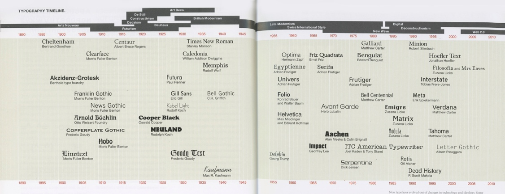
Since the 2000s, the widespread adoption of computers and advances in software have led to the emergence of an increasingly diverse range of typefaces. These typefaces can be categorized in various ways. For example, Dafont(2) classifies typefaces into Basic, Gothic, Fancy, Foreign Look, Techno, Bitmap, Script, Dingbats, and Holiday. Google Fonts(3), by contrast, organizes them into Serif, Sans Serif, Appearance, Feeling, Calligraphy, Seasonal, and Technology.
The two classification systems reflected different approaches. Dafont groups serif and sans serif under the Basic category while dividing display typefaces into more specific stylistic categories. In contrast, Google Fonts treats serif and sans serif as primary categories and groups display typefaces more broadly under categories such as Feeling and Appearance. As discussed earlier, the development of increasingly diverse typefaces has also led to a variety of ways of classifying them.
1.3 The Expansion of Letters in Technological Change
Alongside technological advances, letters continue to expand in new ways. These developments have transformed not only the appearance of letters but also the ways in which they are produced and used. This shift is also reflected in Google Fonts, which includes a dedicated "Technology" category, with variable fonts as a representative example.
“Since creating a typeface isn’t requiring so much knowledge and financial investments anymore, much more experimental work and fun designs have raised as well. And with the technical viability of creating and using VariableFonts in design software and on websites, a lot of “animated” and “flexible typography” started to happen as well.” (Fabian in Dinamo, Personal Inverview, 2026)
Fabian's explanation shows that technological advances have not only transformed the process of typeface production but have also changed the way letters are understood, from fixed forms to flexible systems. In other words, letters are no longer seen as complete and static outcomes but as entities that can be adapted according to users and their environments.
Furthermore, letter production has expanded beyond vector-based font editors such as Glyphs(4) to web-based environments. Gradial, developed by Lena Weber(5), is a modular gradient typeface that reflects this shift (Figure 2). It can also be used as a variable font and, rather than relying on changes to the letterform itself, achieves legibility through variations in gradient brightness.
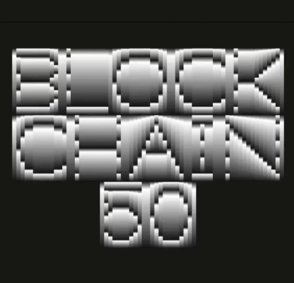
Technological advances have also expanded who can produce letters. AIfont, developed by Process Studio(6), was generated using a customized Deep Convolutional Generative Adversarial Network (DCGAN(7)) trained on a large dataset of images (Figure 3). This demonstrates that letter production is no longer limited to human designers, but that artificial intelligence can also generate letterforms.
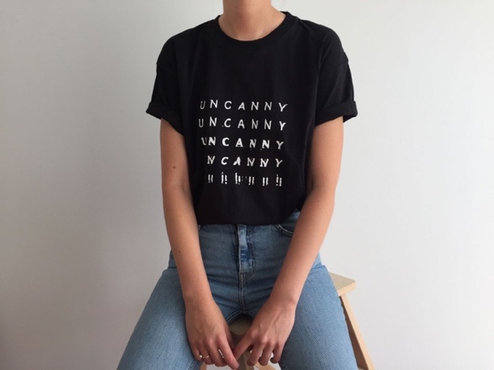
Furthermore, technology is expanding not only the forms of letters but also the ways in which they are used. Bio-metric Sans, developed by Jonathan Zong(8), is a typeface whose letterforms change in real time according to the user's typing speed. Rather than treating letters as fixed outcomes, it incorporates human movement into the process of writing, reintroducing a physical dimension that had largely disappeared in digital letter production.
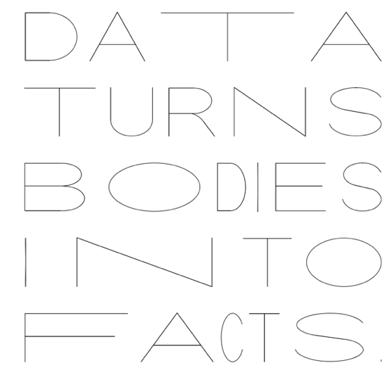
These developments demonstrate that new technologies are not simply producing new forms, but are also transforming the ways in which letters are produced and used. A similar perspective emerged in an interview with Dohee Lee.
“A tool is necessary to express the form of letters, and when the tool changes, the result also changes. Since these new technologies are significantly changing the process through which contemporary letterforms are designed, I think the resulting letterforms will also change accordingly.(Dohee Lee, Leedotype, Personal Interview, 2026)
Dohee Lee's explanation suggests that technological change not only enables new forms but also transforms the tools, processes, and approaches involved in letter production. As the previous examples have shown, letters are no longer simply objects to be written and read, but can instead be understood as entities whose methods of production, producers, and relationships with users continue to expand alongside technological change. This suggests that letters can be understood not as fixed forms, but as dynamic entities that respond to different conditions and environments.
1.4 Future Possibilities of Letters
The digital environment continues to evolve, and with it, the ways in which letters are produced and used are also changing. In the past, the intersection of digital computing and letter production was largely limited to a small number of designers and developers. Today, however, the emergence of accessible libraries and AI tools has enabled a wider range of designers to experiment with new forms of letter production and expression in digital environments.
These developments show that digital environments have expanded into platforms for exploring new forms, movement, and interaction. In particular, recent experiments increasingly incorporate human-centered elements such as artificial intelligence, biometric data, and interactivity. Rather than separating humans from letters, digital technologies are instead strengthening the relationship between them. This trend suggests that future letters may continue to expand through elements closely connected to human experience, including the body, behavior, and the surrounding environment.
1.5 Interview Methodology
To complement the literature review, interviews were conducted with two practicing type designers, Fabian (Dinamo) and Dohee Lee (Leedotype). The interviews explored their perspectives on the meaning of letters, the changing nature of letters in digital environments, and the future possibilities of letters. Rather than serving as primary data for the findings of this study, the interviews were used to complement and support the discussions presented in Chapter 1 from the perspective of professional practitioners. Selected excerpts are cited throughout Chapter 1, while the complete interview transcripts are included in the APPENDIX.
2. Human and Digital Temporalities
2.1 The Relationship Between Humans and Time
Time is an objective physical phenomenon that flows from the past to the future, and all living organisms exist within this continuous flow of time. Humans, however, do not merely measure time; they also experience it.
Human biological systems regulate a wide range of physiological functions, including sleep, hormone secretion, and digestion, in accordance with the Earth's 24-hour cycle. In other words, human physiology operates according to the passage of time, making time a fundamental principle by which biological functions are regulated.
The way humans experience time does not always correspond to objective physical time, but instead varies according to individual psychological states and circumstances. Time may seem to pass quickly when people are deeply engaged in an activity, while it often feels slower in situations of boredom. In this way, humans do not simply measure time but experience it subjectively, and through this experience they construct their lives.
Corrie(9)(2001) interprets W. B. Yeats's Sailing to Byzantium and Byzantium(10) as expressing the human desire for an existence that remains eternally unchanged, while ultimately revealing that human beings are born, grow, age, and die. In particular, Corrie reads the phrase "whatever is begotten, born, and dies" (Corrie, 2001, p. 62) as representing the essential human condition of becoming, arguing that human beings are not complete entities but are continuously formed and transformed over time.
Time, therefore, is not merely an external physical phenomenon for humans, but a fundamental condition that shapes the body, memory, experience, and existence itself. Human beings are constantly transformed through time, and these ongoing changes provide the foundation for the process of aging discussed in the following section.
2.2 The Concept of Aging for Humans
Aging has been understood from different perspectives across disciplines, including biology, sociology, and philosophy. From a biological perspective, aging is associated with the decline of cellular regenerative capacity and physical function. From a sociological perspective, it is understood as the process through which social roles and positions change over the course of life. In philosophy, Heidegger(11) understands human existence as something constituted through temporality. From this perspective, aging can be understood as the process through which time accumulates in the body and throughout one's life.(12)
Together, these perspectives suggest that aging should not be understood simply as decline, but as the traces left by time on human existence. In other words, aging is not merely the deterioration of physical function, but the accumulation of time as it becomes inscribed in the human body and throughout lived experience.
2.3 Aging and Decay in Material Media
Time affects not only humans but also all material media. Living organisms undergo aging, while inanimate objects and artificial materials experience physical changes such as weathering, friction, and oxidation. These changes are not simply forms of damage, but can be understood as traces left by the accumulation of time within materials. Some materials, however, such as diamond, show little visible change over time. Even these materials, however, exist within time; only the manner and rate of their transformation differ.
2.4 How Digital Age
Although all material media appear to exist under the influence of time, digital media operate according to a different temporality. For example, when an image file created ten years ago is opened today, it appears exactly as it did when it was first saved. Unlike physical materials, digital media do not visibly accumulate the traces of time through ordinary use.
Bruce Sterling(13) (2001), in Digital Decay, argues that digital media undergo decay through four primary mechanisms: (1) format rot, (2) hardware rot, (3) link rot, and (4) platform rot. In this sense, digital decay is caused not by the gradual accumulation of time, but by changes in the technological systems required to access and preserve digital information.
By contrast, Evan Roth's(14) Internet Cache Self Portrait (2012) demonstrates that traces of time and use can also accumulate in digital environments. By visualizing the cache data stored by a web browser, the work suggests that digital media, like living organisms, can also bear the traces of use, consumption, and transformation over time.
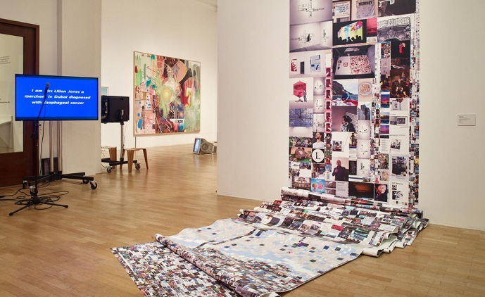
Similarly, Rosa Menkman(15) demonstrates that, through intentional corruption and compression using glitch techniques, digital images can exhibit forms of wear and decay analogous to those found in analogue materials.
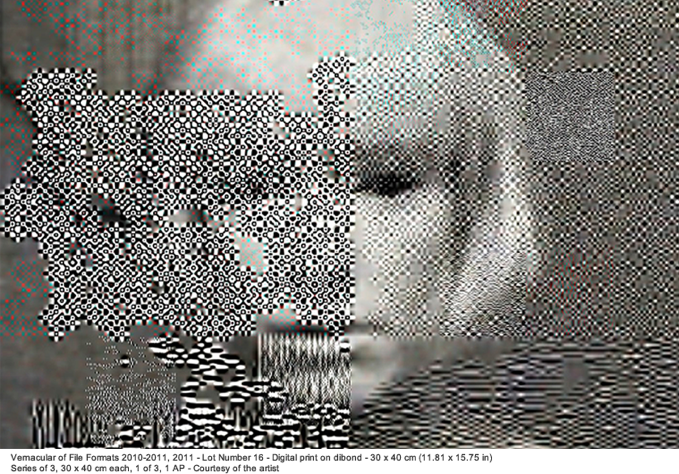
These examples suggest that digital media are also subject to time, but in a fundamentally different way from physical materials. Rather than accumulating traces within the material itself, digital media undergo change through shifts in technological systems and environ-ments. Consequently, objects created in digital environments operate according to a different temporality.
2.5 Digital Letters and Human Temporality
Humans have evolved through millions of years of experiencing time. By contrast, the digital environment has a history of only around sixty years, following the spread of personal computers in the 1970s. As discussed above, time also operates differently in digital environments than in material media. A gap therefore inevitably emerges between the temporality that humans have experienced over a long period and digital temporality.
This gap appears across various forms of visual media in digital environments. It is particularly significant in letters, however, because letters are among the media that have accompanied humans for the longest period of time. From writing on clay tablets and stone monuments to manuscripts, movable type, and contemporary digital fonts, letters have continually changed alongside human time.
Digital letters, however, no longer accumulate the traces of time within their forms. Instead, they repeatedly reproduce the same forms without visible change. As a result, a temporal gap emerges between the passage of time as experienced by humans and the temporality of digital letters.
2.6 synthesis
Humans, living organisms, and physical materials all change through their experience of time. Aging and decay are the traces left by this accumulation of time. By contrast, digital media change in a different way, through shifts in technological systems and environments, such as changes in formats and hardware. In other words, digital media neither experience time nor accumulate its traces within their forms in the same way as humans, living organisms, and physical materials. As a result, a temporal gap inevitably exists between humans and the digital environment, and this gap is particularly evident in letters. While digital letters are repeatedly reproduced in identical forms, humans continue to change through the passage of time.
This raises the following question: can the accumulation of time be expressed through changes in the form of digital letters? Starting from this question, this study explores the possibility that digital letters can visually embody the passage of time through morphological transformation.
3. Exploratory Experiments: Decay & Aging
3.1 Research Objectives
The purpose of these experiments is to explore the new morphological possibilities of letters by applying traces of aging and decay found in the human environment to letterforms. In doing so, the study investigates how letters can move beyond their conventional role as tools for conveying information.
The five experimental subjects were selected from different contexts in order to examine a range of temporal changes and morphological transformations. (a) Banana Decay investigates the process of organic decomposition over time; (b) Sheet Cutting Cracked examines the formation of cracks in a material caused by prolonged exposure to sunlight; and (c) T-shirts Worn-out explores how repeated use gradually wears and deforms fabric. In addition, (d) Fractal Structure investigates the recursive growth patterns found in nature. Through these experiments, aging and decay are understood not as a single phenomenon but as a range of processes—including decomposition, wear, cracking, and recursive growth—that produce different forms of morphological transformation.
3.2 Exploratory Experiments
a. Banana decay
This experiment applied the surface changes that occur during the process of banana decay to letterforms. As time passes, bananas undergo visible changes, including discoloration, the appearance of dark spots, and gradual changes in size and form.
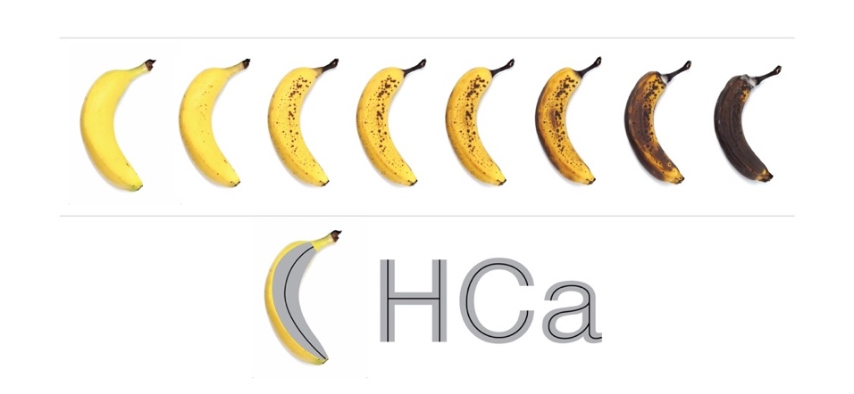
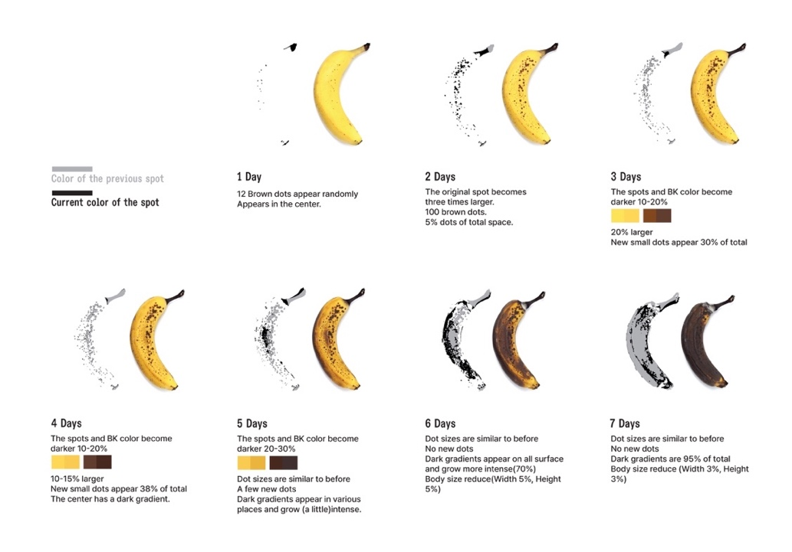
The experiment began by documenting the process of banana decay in a sequence of seven images and analysing the changes in the surface spots that appeared at each stage. The surface of the banana was mapped onto the surface of the letterform, and the spots were extracted using the Image Trace function in Adobe Illustrator. The changes in the number, distribution, colour, and size of the spots over time were then simplified and generalized before being applied to the letterforms. Through this process, the experiment explored how traces of decay could gradually accumulate across the surface of a letterform.
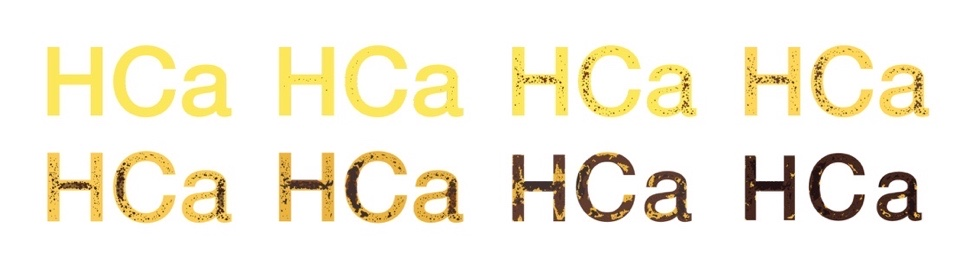
b-1. Sheet cutting cracked
The second experiment investigated the cracking process of sheet cuttings and signs(16) applied to glass and translated these patterns into letterforms. Continuous exposure to sunlight causes the material to expand, contract, and eventually crack from weaker areas.
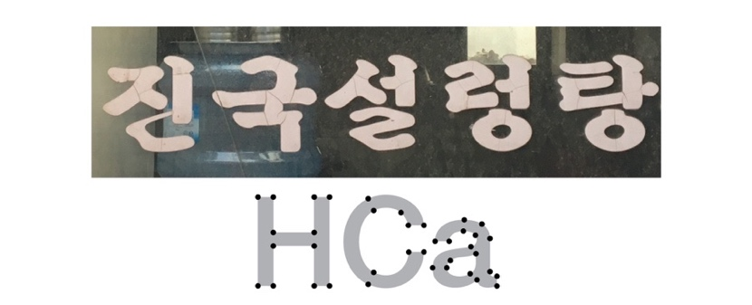
As shown in Figure 8 cracks typically originated in the thinner parts of the letterforms. These crack origins were translated into anchor points in Adobe Illustrator, where the crack patterns were reconstructed. The cracking process was divided into five stages. The origin, direction, and extent of the cracks at each stage were analysed, then simplified and generalized before being applied to the letterforms. This process visualized the gradual formation and propagation of cracks across the surface of the letterforms.
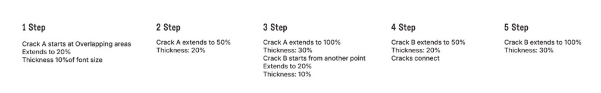
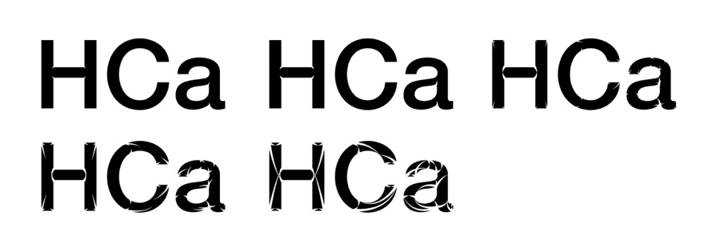
b-2. Sign Cracked
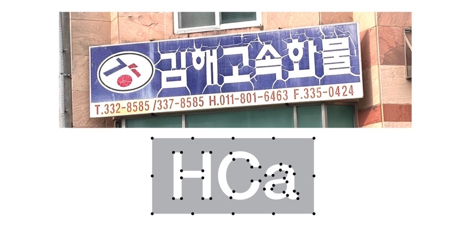
Unlike Experiment B-1, cracks were generated outside the letterforms rather than within them. Each crack was directed toward the nearest point, simulating the outward propagation of cracks.
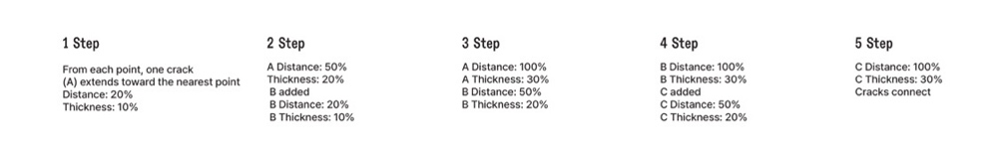
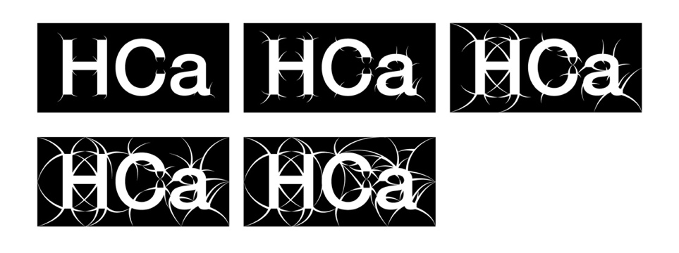
c. T-shirts Worn-out
The third experiment investigated the expansion of fabric and the cracking of printed graphics caused by repeated wearing and washing, and translated these changes into letterforms. As garments are repeatedly washed, the fabric gradually expands horizontally, while vertical cracks begin to appear in the printed surface. Unlike the previous experiments, this study examines decay resulting from everyday use, highlighting changes that are closely connected to repeated human activity.
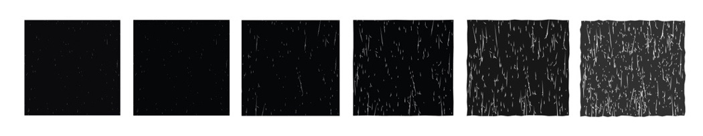
In this experiment, JavaScript(17) was used to generate five randomized stages of vertical crack patterns. A worn-out effect was also applied to simulate edge wear caused by fabric expansion, together with the gradual fading of the printed surface.
The degree of wear was divided into five stages. The density of vertical cracks, the size and colour of horizontal cracks, and the extent of edge wear were simplified and generalized before being applied to the letterforms. Through this process, the experiment visualized the gradual transformation of printed fabric as morphological changes in the letterforms.
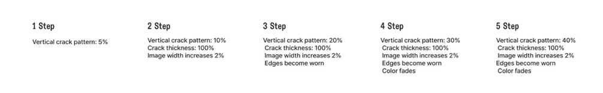
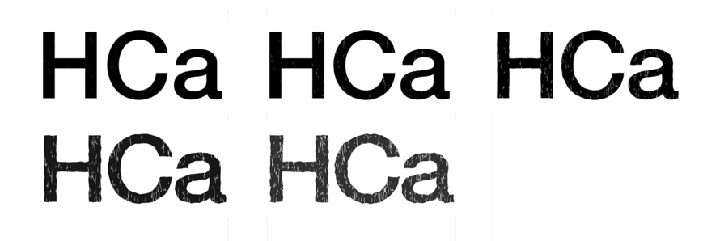
d. Fractal Structure
This experiment applied fractal structures found in natural forms such as broccoli and bracken to letterforms. Fractal structures generate larger forms through the repeated expansion of smaller units. Rather than representing the direct processes of aging or decay, this experiment adopts a structural approach based on the principles of self-similarity and growth found in nature. Although it is more closely related to growth than aging, the experiment explores the possibility of letterforms differentiating and expanding over time.
The fractal structure was developed from the Recursive Tree example in p5.js(18). The algorithm was modified in JavaScript by adjusting branch size and direction to generate letterforms and explore their structural possibilities.
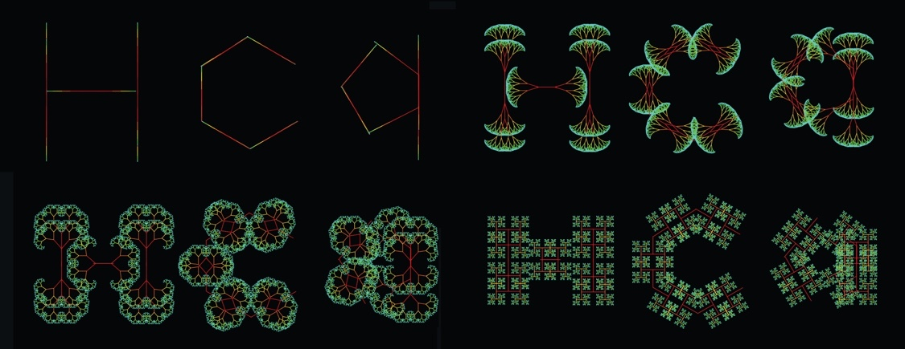
3.3 Synthesis
The primary focus of these experiments was to examine whether aging and decay in the human environment could be interpreted and explored through different approaches. During the experiments, the spots and colour changes of bananas were translated into changes in the central structure and morphology of the letterforms, while cracks in sheet cuttings were interpreted as new anchor points from which cracks could develop. In the T-shirt experiment, fabric wear was interpreted through the horizontal structure of the letterforms, and the fractal experiment extended natural fractal principles into the structural organisation of letters.
However, these experiments were limited in that they primarily translated observable phenomena directly into letterforms. They did not sufficiently explore alternative interpretations of the same phenomenon or reconstruct them through new structural rules. Rather than simply reproducing visible changes, future experiments should investigate multiple morphological and structural approaches to interpreting a single phenomenon.
Furthermore, because these experiments focused mainly on phenomena surrounding humans, they were limited in exploring the process of human aging itself. Therefore, the following experiments shift their focus to human aging, which is more closely aligned with the central aim of this research, and investigate how it can be interpreted from different perspectives and translated into letterforms.
The selected letters (H, C, and a) also did not adequately represent the structural diversity of the Latin alphabet. H primarily consists of straight strokes, C contains only curved forms, and although a combines both straight and curved elements, its limited internal space restricts its representativeness. In addition, the experiments were conducted on only a small range of letterforms, making it difficult to evaluate how different typeface styles influence the results. Therefore, the following experiments use a broader selection of letters and typefaces to better represent the structural characteristics of the Latin alphabet while ensuring greater consistency and representativeness.
4. Experiments: Human Aging
To investigate a broader range of letterforms, this study adopts the four basis letters (B, A, S, and Q) used by Shumeet Baluja(19)(2016) for learning typographic styles. Baluja explains that these four letters contain a wide variety of edges, angles, and curves, providing structural cues for constructing the remaining letters of the alphabet. Accordingly, B, A, S, and Q were selected as representative letters for exploring the principal structural characteristics of the Latin uppercase alphabet (Baluja, 2016, p. 3) (20).
The experiments were conducted using three typefaces provided by the type foundry Dinamo(21): the sans-serif Oracle, the serif Gaisyr, and the display typeface Pareto. These typefaces differ in serif structure, stroke weight, overall construction, and drawing approach, allowing the experiments to examine how such structural differences influence the resulting morphological transformations.
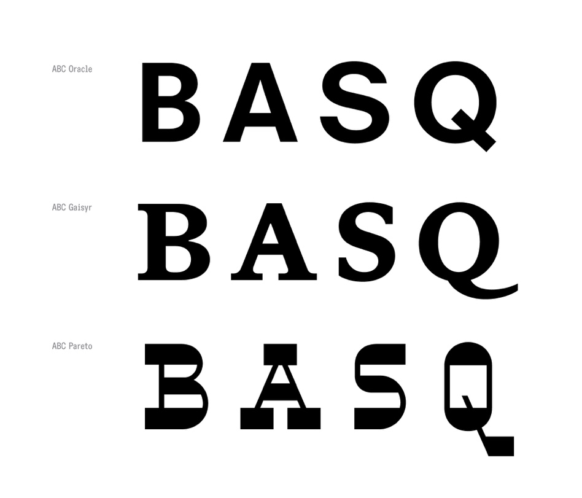
4.1 Experiment I: Four Initial Approaches
a. Morphological
Human aging is accompanied by a wide range of morphological changes. Externally, these include the formation of wrinkles, roughening and sagging of the skin, a hunched back, a gradual reduction in height, and the greying of hair. Internally, aging is associated with changes such as the loss of muscle mass and collagen. Among these characteristics, this experiment focuses on three representative signs of human aging: reduced height, a hunched back, and wrinkles.
a-1. Hight & Hunched Back: Along the Horizontal Axis
As humans age, they gradually lose height and develop a hunched posture. To translate these changes into letterforms, the proportions of the human body and the letterforms were mapped at a 1:1 ratio (Figure 19). In addition, the side profile of the aging human body was interpreted as the front view of the letterforms, allowing changes in posture to be directly translated into their morphological transformation.
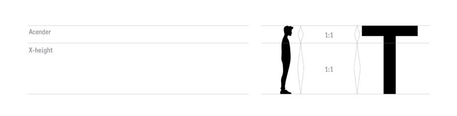
As shown in Figure 20, the human body gradually develops a forward-leaning posture and loses height during the aging process(22). These changes were translated into the letterforms by progressively inclining the ascender, which corresponds to the human neck, while reducing the overall letter height to approximately 70% of the original x-height. The angle of inclination was increased in increments of approximately 10 degrees across each stage.
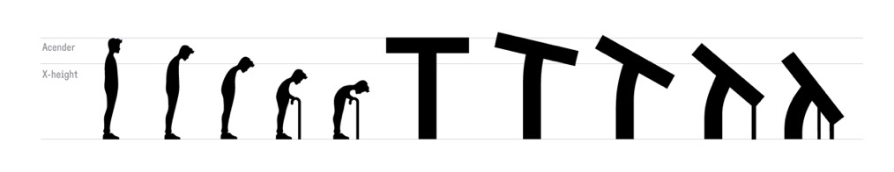
Based on Figure 20, a system was developed in JavaScript to apply these transformations to various letters. A bend effect was used to simulate the hunched posture, while the reduction in height was created by adjusting the vertical scale. These parameters were then applied to the letterforms.
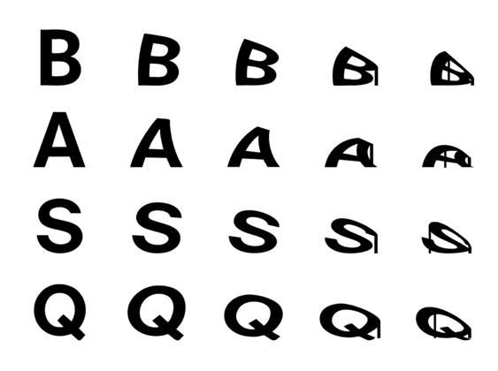
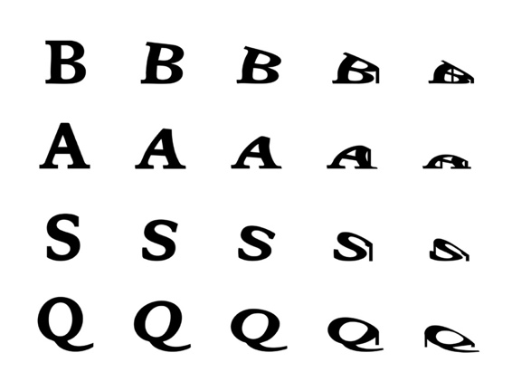
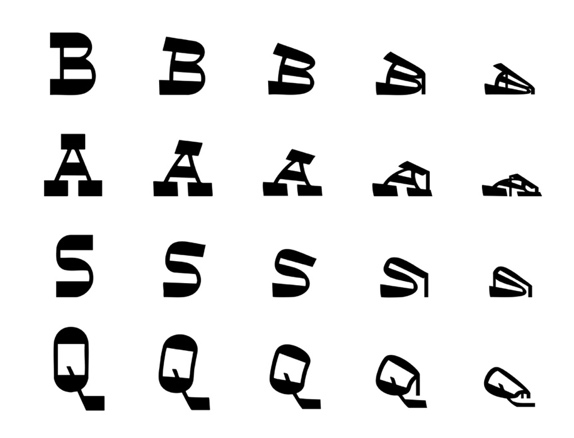
a-2. Wrinkle
Human wrinkles develop as collagen and skin elasticity gradually decline with age, while repeated facial and bodily movements cause the skin to fold over time. These movements follow specific directional patterns, eventually leaving permanent traces on the skin's surface.
This experiment assumes that if wrinkles were to develop on letterforms, they would emerge along the directions of repeated use. Accordingly, the orientation of the wrinkles was determined based on the direction of writing. In addition, the transitions from the primary wrinkles to the corners were informed by the Roman tradition of V-cut lettering. As shown in the right image of Figure 26, the faceted surfaces created by carving into the stroke were used as the morphological reference for constructing the wrinkles.
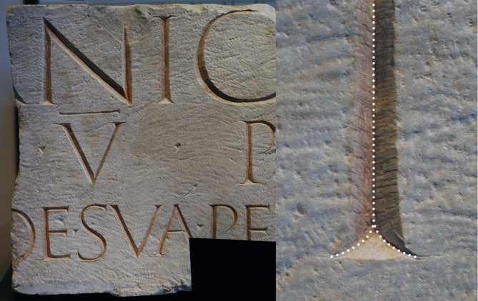
To explore the irregular morphology of wrinkles, wrinkles were first drawn by hand on printed letterforms. The centreline of each letter was defined as the primary wrinkle. From this line, secondary wrinkles extended at 45-degree intervals toward locations where the letter structure changed direction sharply, where strokes intersected, and along curved strokes. This established a consistent rule for generating wrinkle patterns across different letterforms.
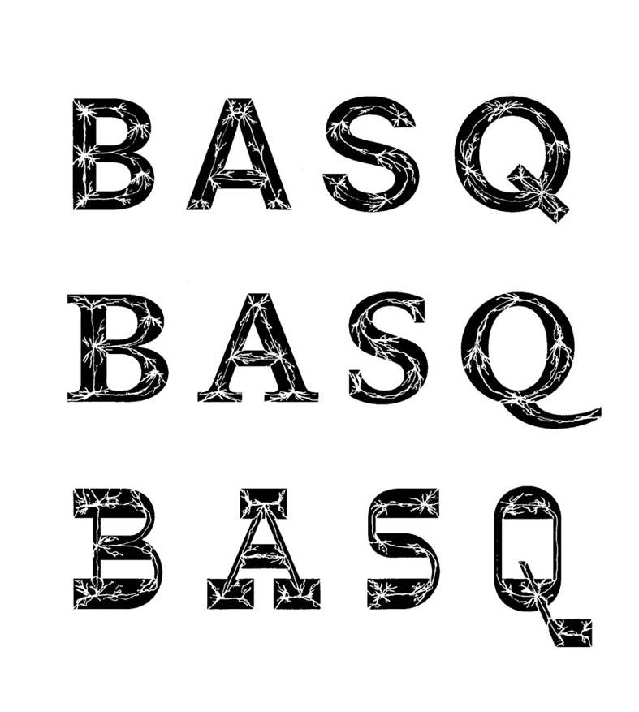
b. Cognitive
The second experiment focuses on cognitive aging. In humans, cognitive aging is characterised by changes in processing speed, working memory, and the ability to learn new information. As a result, the ability to understand and respond to new information becomes slower, while the capacity to retain, manipulate, and compare information gradually declines. Rather than translating these changes into the letterforms themselves, this experiment interprets them through the process by which letters appear on the screen (Figure 28).
Under normal conditions, a letter is displayed immediately and accurately once a key is pressed. In this experiment, however, the delay, error, and correction occurring between input and output are treated as the primary expressive elements. The process was designed to reflect the slowed understanding and response associated with cognitive aging by drawing on phenomena observed during keyboard typing.
For example, when the user presses the key "a", the letter "b" initially appears on the screen before being corrected to "a" one second later. This sequence is not intended as a simple typographical error effect. Rather, it serves as a metaphor for a state in which memory, response, and judgement are no longer immediately connected. Typing therefore functions not as a means of producing accurate letters efficiently, but as a device for revealing a cognitive process that is slowed, disrupted, and continually readjusted.
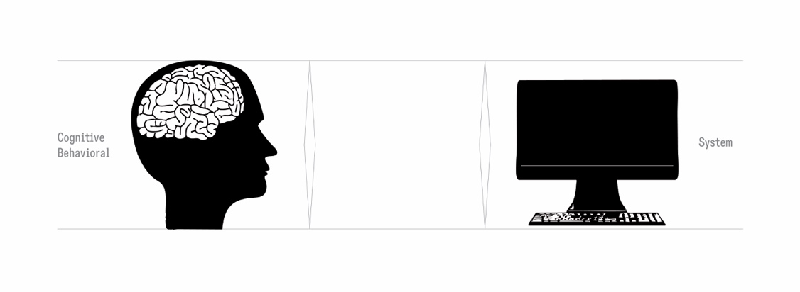
c. Behavioral
The third approach focuses on behavioral aging and, like the previous experiment, examines aging from an internal perspective. Behavioral aging is primarily characterised by slower movements and increased time required to perform new actions. In other words, both cognitive processing and physical movement gradually become slower. Although this phenomenon is closely related to muscular decline, this experiment adopts the same perspective as Figure 28 by interpreting the act of writing as analogous to the way a system processes and outputs letters.
For example, when a computer is overloaded, typed letters may not appear on the screen until two or three seconds after the keys are pressed, and cursor movements also become noticeably delayed. This experiment applies a similar temporal delay to the interaction between the user and the letters. Accordingly, slowness functions not simply as a reduction in speed, but as a device for expressing temporal distance and aging.
d. Social
Human social aging is characterised by changes in relationships and social roles. Retirement, children leaving home, and changes in friendships gradually increase the distance between individuals and the people around them. This experiment interprets these changes through the spatial relationships between letters.
Whereas the previous two approaches explored aging through the system that processes letters, this experiment examines social aging within the program that organises and displays them. In other words, it investigates aging at a more local level by focusing on the relationships between letters within a single computational environment.
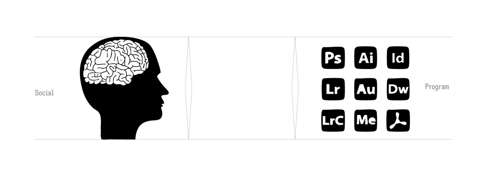
Human social isolation was translated into the gradual isolation of individual letters. To achieve this, tracking and leading were progressively increased, causing the letters to become increasingly separated, as shown in Figure 30. This transformation is not intended simply as an adjustment of tracking and leading. Rather, it serves as a metaphor for the growing social isolation experienced during aging. Consequently, the spatial relationships between letters function as a representation of human relationships.
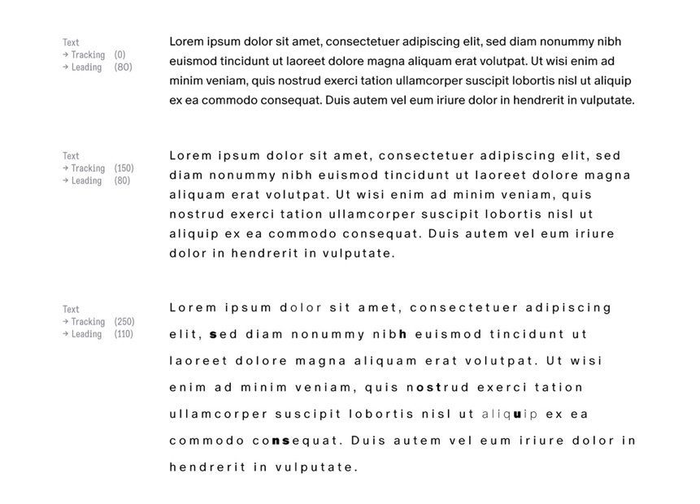
This study explored human aging through four different approaches. The first, the morphological approach, focused on visible physical changes, including reduced height, a hunched posture, and wrinkles. The second, the cognitive approach, and the third, the behavioral approach, interpreted aging as phenomena occurring within the system, such as incorrect input, delayed output, and slowed interaction during typing. The fourth, the social approach, interpreted social aging as typographic changes in the spacing between letters.
Comparing the four approaches, the morphological approach most directly revealed the visual characteristics of aging through the letterforms themselves. In particular, physical changes such as reduced height, a hunched posture, and wrinkles demonstrated the potential to be translated into the structure, proportions, surface, and rhythm of letters. Rather than merely illustrating aging, these transformations suggested that aging could generate diverse visual possibilities within letterforms, allowing for a richer morphological exploration.
By contrast, the cognitive, behavioral, and social approaches expressed aging through the process of writing, the behaviour of the system, or the relationships between letters, rather than through the letterforms themselves. While these approaches offered conceptual interpretations of aging, they were comparatively limited in their ability to develop the intrinsic morphology of letters. Since the objective of this study was to reveal the temporal flow of digital letters through morphological transformation, the morphological approach proved to be the most closely aligned with the aims of the research.
4.2 Experiment II: Deepening the Morphological Approaches
The second series of experiments further investigates the morphological approach from multiple perspectives. The aim of this study is to reconsider conventional assumptions about the orientation and structure of letters from new perspectives, while exploring a range of possibilities for translating human morphological aging into letterforms.
Building upon the previous experiments on (a) Height & Hunched Back and (b) Wrinkles, this study further explores (c) Skin Elasticity, (d) Rough Skin, (e) Muscles & Skeleton, and (f) White Hair.
a. Hight & Hunched back
a-1. Along the Depth Axis
Letters are generally perceived from a frontal view on a two-dimensional plane. However, their orientation does not necessarily have to remain fixed. Although letters appear as flat forms, they can also be interpreted as three-dimensional objects with front, back, and side surfaces, depending on the viewer's perspective.
From this perspective, this experiment considers the letter as a bodily structure. Just as a person standing upright gradually leans forward with age, the letter was also treated as an object with a frontal orientation and transformed by tilting it forward. This approach seeks to introduce a sense of directionality and bodily movement into the otherwise planar form of the letter.
In this experiment, the Band modifier in Blender(23) was used to bend the letterforms forward uniformly.
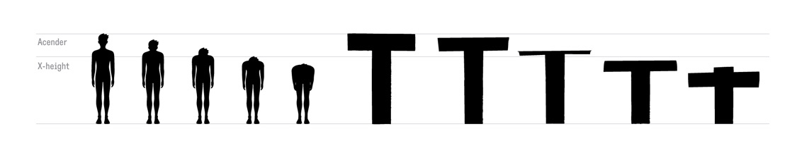
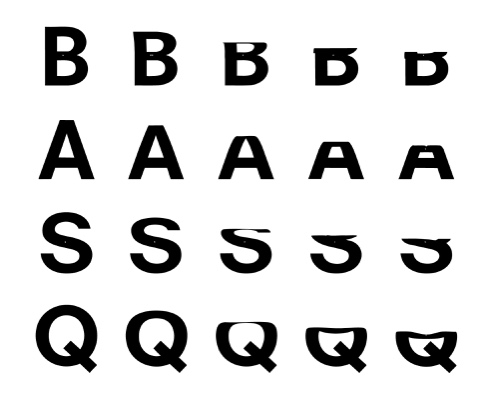
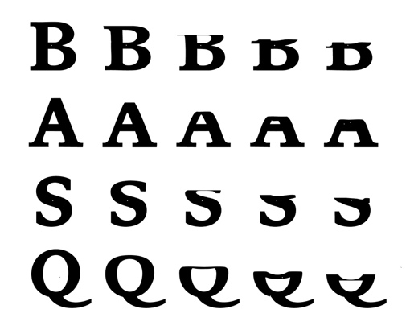
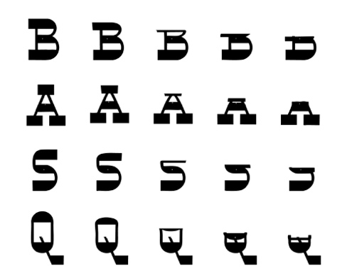
a-2. Synthesis
The two experiments(24) share the same premise of treating letters as corresponding to the human body and translating a hunched posture into morphological transformation. However, they differ in the perspective from which the letters are viewed. Whereas the first experiment interpreted the letter from a side view, the second approached it from a frontal view. This comparison suggests that letters do not possess an inherently fixed front, back, or side. Instead, a directional orientation must first be established before bodily characteristics can be translated into letterforms.
Different bending directions also produced different morphological outcomes. In the Height & Hunched Back experiment, the formal quality of letters with rounded structures deteriorated as the degree of bending increased. By contrast, in the Hunched Forward experiment, the forward bend itself was less visually apparent. Instead, the impression of aging emerged through a gradual reduction in legibility.
b. Wrinkle
b-1. Crumpled paper
This experiment reconstructs the spatial condition of the letter. Digital letters are generally presented as two-dimensional forms on a flat surface. Unlike human skin, they do not possess the physical properties required to fold, compress, or wrinkle. Therefore, creating wrinkles within digital letterforms first requires the introduction of an artificial three-dimensional transformation.
To achieve this, the letters were first printed onto paper, after which the paper was manually crumpled. As the paper was crumpled, the letters bent, folded, and underwent three-dimensional deformation together with its surface. In this process, the paper functioned not merely as a printing medium, but as a physical intermediary that generated wrinkles within otherwise planar letterforms. The morphological traces produced by the crumpled paper were then translated back into the letterforms (Figure 36).
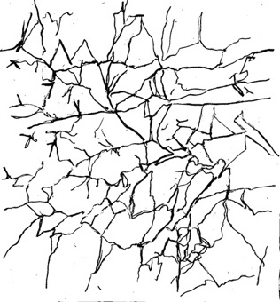
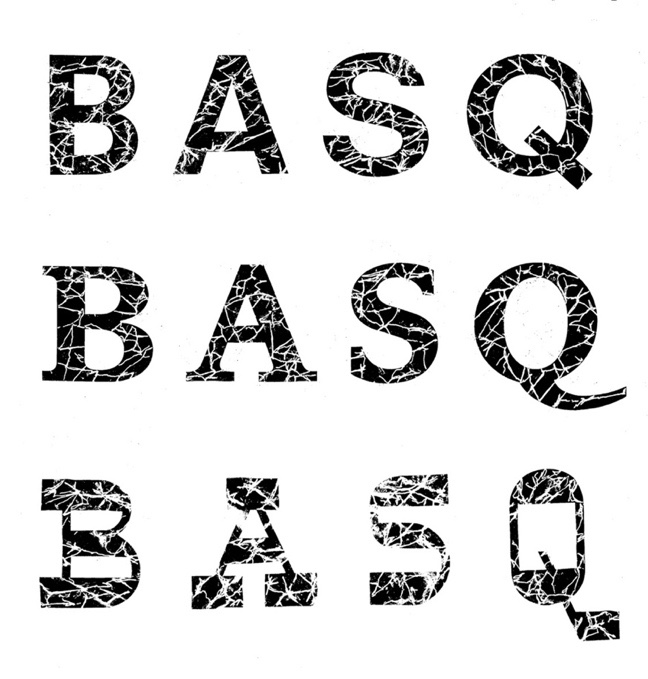
b-2. Tension
The formation of wrinkles requires several conditions, one of which is a reduction in skin tension. Here, tension refers to the force that keeps the skin stretched by pulling its surface taut. Young skin maintains a relatively smooth surface through this continuous tension. As aging progresses, however, this force gradually weakens, causing the skin to lose its firmness. As a result, folded areas become more likely to form and existing wrinkles become deeper.
Whereas the previous experiments focused on the morphology and folded structure of wrinkles, this experiment examines the underlying force responsible for their formation. Rather than treating wrinkles simply as lines on the surface, they are interpreted as the result of a gradual loss of the tension that once supported the surface.
The structural system of the letters in this experiment was developed using A Fork of Cloth Simulation, an OpenProcessing(25) example created by Naoki Tsutae(26). As shown in Figure 37, the lines are connected through forces that pull against one another, forming an interwoven structure similar to small units of skin tissue. When the user drags the mouse across the structure, the connections between the lines break and the remaining lines contract, producing forms that suggest wrinkles.
Based on this system, the intersecting points along the horizontal lines were removed, and the resulting structure was applied to the letterforms.
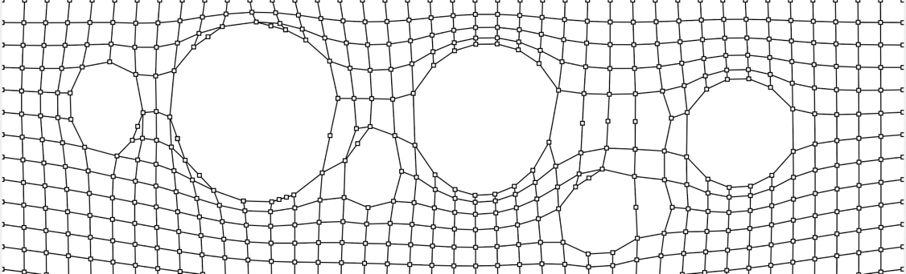
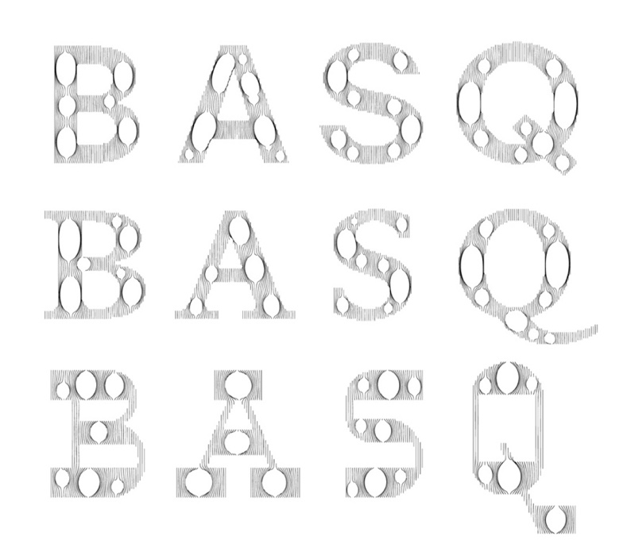
b-3. Synthesis
The first Wrinkle experiment, Crumpled Paper, and Tension all share the premise that the surface of a letter is not fixed, but can be understood as a surface on which wrinkles may form. However, the three experiments differ in how they interpret aging through wrinkles. Whereas the first experiment allowed traces of aging to expand along the direction of writing, Crumpled Paper interpreted aging through physical traces produced by external force. By contrast, Tension approached wrinkles through the weakening of the internal structure and tension that had supported the surface.
These experiments demonstrate that the persuasiveness of wrinkles does not arise simply from adding lines to the surface of a letter. Wrinkles function differently depending on what kind of movement and directionality they introduce into a planar letter, and how this directionality interacts with the letter’s existing structure. Therefore, for wrinkles to operate as a convincing visual feature, the structure of the letter, the form of the wrinkles, and their direction, density, and surface qualities must be designed together.
c. Skin elasticity
Whereas the Wrinkle experiments interpreted the entire surface of the letter as skin, the Skin Elasticity experiment instead treats the outline of the letter as the boundary of the skin (Figure 39). Although both approaches are based on skin aging, they differ in where the aging process is applied, depending on how the letter is interpreted. Through this comparison, the experiment explores how the same aging characteristic can be translated into different morphological transformations according to perspective.
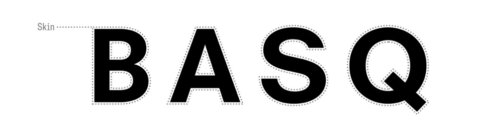
c-1. Downard Gravity
As human skin ages, it gradually loses its elasticity and begins to sag under the influence of gravity. The formation and direction of sagging wrinkles are therefore closely related to gravity. As in the Height & Hunched Back experiment, this study interprets the letter as a standing human body. Accordingly, the upper part of the letter T corresponds to the upper body, while the lower part represents the lower body.
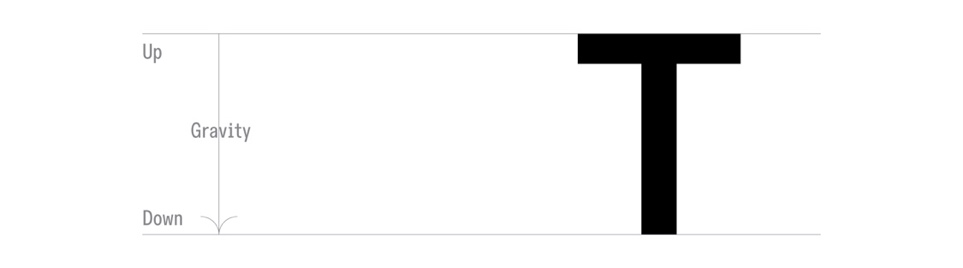
This experiment investigates how the letter changes when its skin is separated from its structure and its elasticity is gradually reduced. To achieve this, the transformation was applied in Adobe Illustrator using the anchor points of the letterform as reference points. Because gravity acts from the top to the bottom of the letter, the effect was applied only to segments aligned with this vertical direction. Diagonal upper strokes and horizontal top strokes were excluded, as they are less directly influenced by downward sagging.
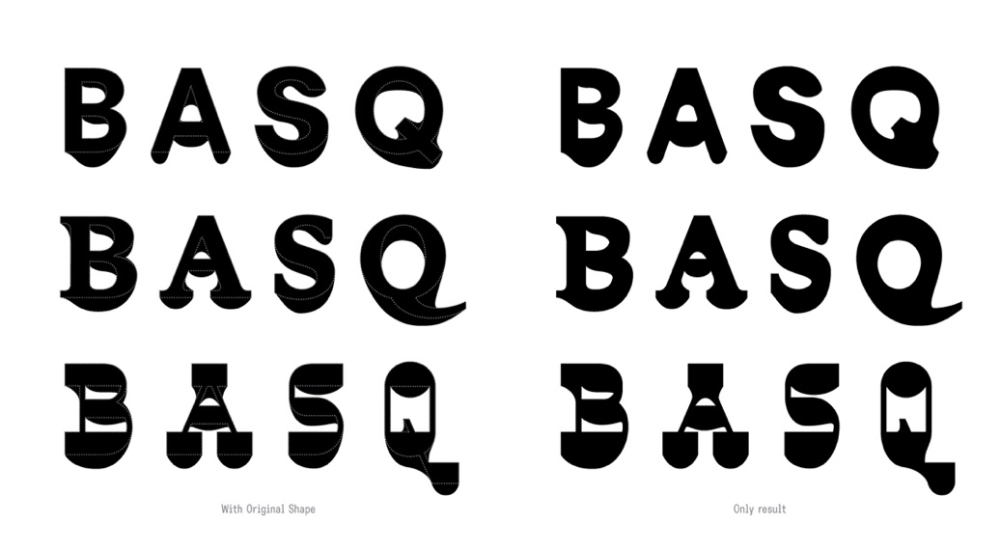
c-2. Front and Back Gravity
The second Skin Elasticity experiment approaches the direction of gravity differently. Rather than acting toward the lower part of the letter, gravity is understood as moving from the front of the letter toward its back. In other words, this is similar to looking down at a letter placed near one’s feet while standing. As shown in Figure 42, the letter is interpreted as lying horizontally, with its top and bottom surfaces defined accordingly, and gravity is directed toward its back surface.
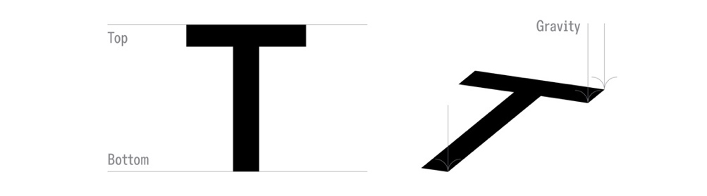
As in the previous experiment, gravity was simulated in Adobe Illustrator. The transformation can be understood as similar to the way ice gradually melts. Based on the original letterform, the outer skin was treated as becoming loose and sagging, producing the appearance of melting. An irregular outer contour approximately 30% larger than the original letterform was generated, and the spatial relationships between overlapping or intersecting strokes were also considered during the process.
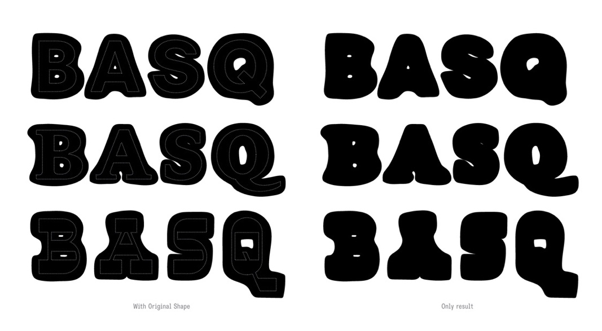
c-3. Synthesis
The two experiments share the premise of interpreting human skin not as an isolated surface element, but in relation to the outer form of the letter. However, they differ in how the direction of gravity is defined. Whereas Downward Gravity sets gravity from the top to the bottom of the letter, Front and Back Gravity interprets it as a force acting from the side closest to the viewer toward the far side, depending on the viewing perspective. This comparison suggests that letters do not possess a fixed direction of gravity. Instead, the direction in which gravity acts must first be established before a loss of skin elasticity can be applied.
The direction of gravity also produced different morphological outcomes. In Downward Gravity, the lower part of the letter was primarily affected, making the characteristics of sagging relatively clear. By contrast, in Front and Back Gravity, the effect of gravity was distributed more evenly across the entire letter, resulting in a broader range of transformation. Although the degree of formal change was greater in Front and Back Gravity, the loss of skin elasticity was perceived more directly in Downward Gravity.
Therefore, skin elasticity cannot be represented simply by extending or loosening the outer contour of a letter. Its visualization depends on how the direction and range of gravity are defined. In particular, sagging as a characteristic of aging becomes clearer when gravity is concentrated in a specific direction. When it is applied evenly across the entire letter, the formal deformation itself may become more prominent than the impression of aging.
d.Rough Skin
As skin ages, its surface gradually becomes rougher. Infant skin is typically smooth, whereas aging skin develops an increasingly coarse texture. Although this change is partly associated with reduced collagen and the formation of wrinkles, it is also an inherent characteristic of the aging skin itself. This experiment explores how the rough surface of aging skin can be translated into the outer form of a letter.
d-1. Nomal Rough
The first experiment applies the rough texture of aging skin directly to the letter. The roughness of skin can be understood as a relatively simple morphological transformation, in which a previously smooth and even surface is displaced in irregular directions, forming a coarse texture. Based on this principle, the experiment applies the transformation to the outline of the letter, allowing its previously regular contour to shift unpredictably and transition from a smooth to a rough surface.
This experiment was carried out using the Roughen effect in Adobe Illustrator. The example on the left applies the effect with moderate settings, whereas the example on the right uses a much stronger configuration. The two variations were included to demonstrate the range of morphological possibilities produced by the same effect.
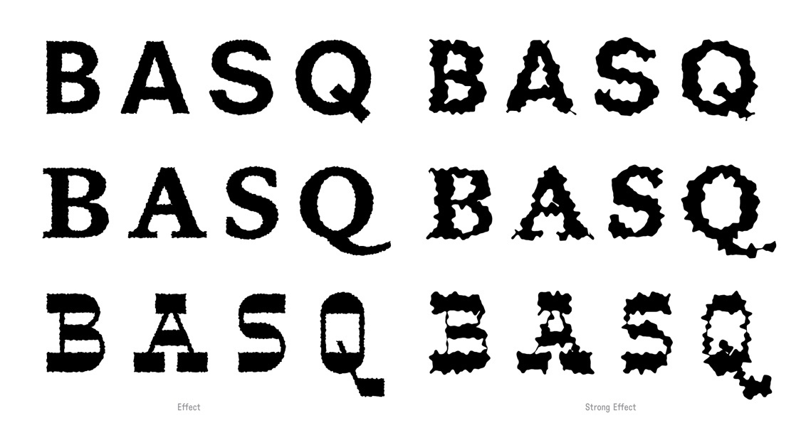
d-2. Mathematical algorithm rough
This experiment assumes that the roughness of skin does not emerge entirely at random, but instead develops according to certain rules within the underlying structure and characteristics of the skin. The human body is not composed of isolated elements; rather, it consists of multiple tissues and structures that are interconnected. From this perspective, changes in the skin can also be understood as being associated with an underlying algorithmic order.
Based on this idea, an algorithm created by Instagram creator Lingualin_(27) was identified (Figure 45) and applied to the outline of the letter. This approach made it possible to explore a form of surface roughness that differs from the irregular transformations produced by the conventional Roughen effect.
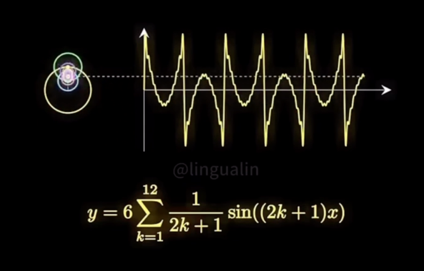
In this experiment, the mathematical algorithm was implemented in JavaScript and applied to the outline of the letter. The waveform generated by the algorithm was used to transform the letterform. Three parameters were used to control the waveform: (1) the number of harmonics, (2) the repetition of the waveform, and (3) the vertical amplitude of the waveform. Through adjustments to these parameters, two representative configurations were selected for the experiment.
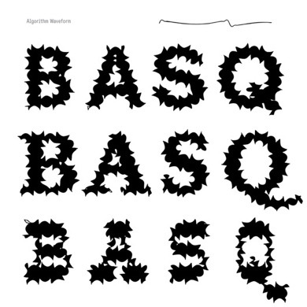
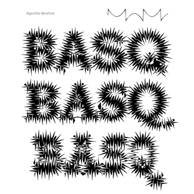
d-3. Synthesis
The two experiments share the same premise as the Skin Elasticity experiments in that they interpret skin not as an isolated surface element, but in relation to the outer form of the letter. However, they differ in how the roughness of the skin is generated. Whereas Normal Rough produces surface roughness through irregular and non-uniform deformation, Mathematical Algorithm Rough generates it using a mathematical algorithm.
The first experiment introduces unpredictable variations through random values, resulting in a surface texture that more naturally resembles the roughness of aging skin. By contrast, the second experiment transforms the outline of the letter using a wave-based pattern. Although this approach produces a distinctive texture, the repeated pattern is perceived less as the irregular roughness of skin and more as a structured decorative form.
Therefore, when translating the rough texture of aging skin into letterforms, the degree of irregularity is more important than the amount of deformation itself. Although Mathematical Algorithm Rough produces a visually distinctive morphological effect, the irregular and unpredictable transformations of Normal Rough proved to be more effective in conveying the roughness of aging skin.
e. Muscle & Skeleton
As humans age, their ability to maintain and generate muscle gradually declines. Bone strength also decreases over time. This experiment interprets the structure of the letter as a system of muscles and bones, and explores how age-related changes in the musculoskeletal system can be translated into morphological transformations of the letter.
e-1. Charles’s way
This experiment is based on the National System for the Construction of Typographic Skeletons developed by Charles Cox et al. (28)(1982) (Kate, O. J., p. 92) (Figure 46). The system makes it possible to identify the skeletal structure of a letter based on the way it is written. Building upon this framework, the present study further defines the points where the skeleton intersects as joints, while the segments connecting adjacent joints are interpreted as muscles. Based on this interpretation, the experiment explores how age-related changes in muscles can be translated into letterforms.
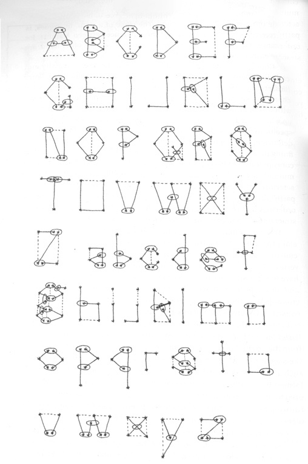
In this experiment, the method shown in Figure 48was first applied to the letter, and the skeleton and joints were constructed in Adobe Illustrator. The muscle segments connecting the joints were then deliberately reduced in thickness. This transformation was intended to represent the gradual loss of muscle mass that occurs with aging.
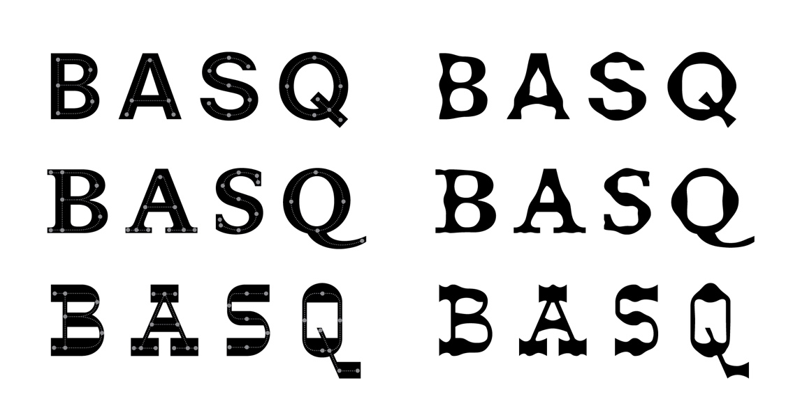
e-2. Two joint way
The second experiment adopts a simplified structural approach compared with the first. In the first experiment, each letter contained between five and eleven joints, resulting in a relatively complex internal structure. By contrast, the second experiment sought to resolve the entire letter using only two joints. The joints were positioned at the two ends of the letter, while the central region between them was progressively reduced in thickness to represent the loss of muscle mass.
The experiment was conducted under the same conditions as the previous one. However, because this approach used only two joints, the application method was adjusted to prevent the effect from becoming biased toward one side where strokes overlapped. The visual midpoint between the two joints was defined as the thinnest part of the muscle, and the transformation was applied across the entire stroke based on this reference point.
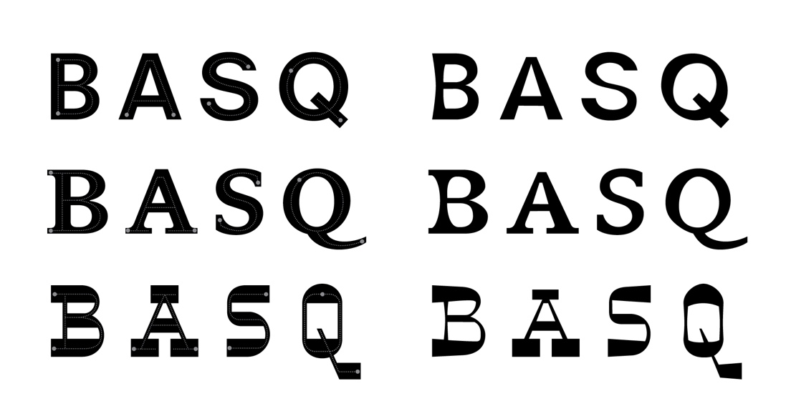
e-3. Synthesis
The two experiments share the premise of interpreting the letter as a bodily structure composed of bones, joints, and muscles. However, they differ in how this internal structure is defined. Whereas Charles's Way subdivides the skeletal structure of the letter and defines the intersections between bones as joints, Two Joint Way simplifies the internal structure to only two joints and represents muscle loss through the region connecting them.
The first experiment was able to produce more complex morphological changes because muscle reduction occurred between multiple joints. However, as the number of joints increased, the letterform tended to become overly segmented and structurally complex. By contrast, the second experiment presented the principle of muscle loss more clearly, but its simplified structure made it difficult to reflect the diverse skeletal relationships within the letter.
These experiments demonstrate that a letter can be interpreted not simply as an outer contour, but as a body with an internal musculoskeletal structure. However, the visual expression of muscle loss depends on the number and placement of the joints, the stroke thickness, and the skeletal structure of the typeface. The results suggest that the most effective morphological transformation is achieved by balancing structural subdivision with simplification.
f. White hair
As humans age, their hair gradually turns gray. This occurs because the pigment cells within the hair follicles gradually lose their function, reducing or eventually stopping the production of melanin. This experiment explores how a letter can gradually lose its colour as a visual expression of aging.
f-1. Paper texture
Throughout history, letters have been inscribed on stone, and today they are primarily presented on paper and digital media. This experiment assumes that if a letter were to lose its colour, representing this process through the texture of paper would be more convincing than simply reducing its colour value. Based on this idea, the experiment explores colour loss using paper as the most familiar and widely used medium for written communication today.
The experiment was conducted by applying a commonly used paper texture to the letterforms. The random distribution of gray hair was translated into the letter through irregularly distributed texture. As shown by the S in the middle-right example of Figure 52, when the texture is applied too densely, the distinction between the letter and the background becomes difficult to perceive. The small speckles within the texture also resemble the appearance of gray hair when viewed from above.
f-2. Inner Glow
The second experiment focuses more directly on the process by which hair turns gray. As gray hairs gradually appear one by one, their increasing number eventually gives the impression that the entire head is changing colour through a gradual transition. Based on this observation, the experiment interprets a gradient as a visual representation of the graying process and explores how this transition can be applied to letterforms.
The experiment was carried out using the Inner Glow effect in Adobe Illustrator. This effect preserves the outer contour of the letter while applying a glow only to its interior. As a result, the letter gradually becomes lighter from the outer edge toward the centre, creating a smooth gradient. This transformation is intended to represent the gradual process through which hair turns gray.
f-3. Synthesis
The two experiments share the premise of interpreting the graying of hair as a process of colour loss in letterforms. However, they differ in how this transformation is visualized. Whereas Paper Texture represents colour loss through the irregular application of paper texture, Inner Glow expresses the process as a gradual transition from the outer contour of the letter toward its interior.
The first experiment was effective in representing the irregular distribution of gray hair. The small speckles of the paper texture created an impression similar to viewing gray hair from above. However, when the texture was applied too densely, the distinction between the letter and the background became less clear, reducing legibility. By contrast, the second experiment more clearly represented the gradual process of colour loss. However, the degree of whitening varied according to stroke thickness, making thinner strokes appear to lose their colour more rapidly than thicker ones.
These experiments demonstrate that the aging of letters can be represented through the gradual reduction and disappearance of colour. However, the visual expression of gray hair depends not simply on making the letter white, but also on where and how the colour disappears, as well as how this transformation interacts with stroke thickness and the surrounding background.
4.3 Experiment III: Complex Application of Morphological Elements
Whereas the second series of experiments examined the individual application and morphological potential of each aging characteristic, the third series investigates how letterforms change when multiple aging elements are combined. Through this approach, the study explores aging not as a single visual effect, but as a complex process in which multiple transformations accumulate and interact with one another.
a. Hight & Hunched back + Skin Elasticity + Wrinkle
This experiment combines three different aging characteristics in sequence. The image on the far left shows the result of the Height & Hunched Back experiment. The second image applies Skin Elasticity to this result, and the third further incorporates Wrinkle. The first two transformations were carried out in Adobe Illustrator, while the wrinkles were added manually by hand.
b. Muscle & Skeleton + Rough Skin + Tension of Skin
This experiment combines a different set of aging characteristics. The image on the far left shows the result of the Muscle & Skeleton experiment. The second image applies Rough Skin to this result, and the third further incorporates Tension of Skin. The first two transformations were carried out in Adobe Illustrator, whereas the third was implemented in OpenProcessing.
4.4 Findings and Synthesis
The primary focus of this study was to examine whether the concept of human aging could function as a principle for transforming letterforms. In particular, the research explored how physical changes associated with aging, such as a hunched posture, wrinkles, and sagging skin, could be translated into the structure of letters, and whether these transformations could achieve morphological persuasiveness.
The experiments demonstrated that the ways of interpreting letterforms can be expanded in various directions. Rather than understanding letters only as two-dimensional forms, approaching them from multiple perspectives and constructing different hypotheses broadened the possibilities for interpreting their structure. These findings suggest that aging can function not merely as a visual effect, but as a principle capable of transforming the morphology of letterforms.
However, some aging characteristics proved less convincing than others. In particular, the application of skin aging, especially wrinkles, produced relatively weaker results. When the three-dimensional folding of human skin was translated onto the two-dimensional surface of a letter, wrinkles were sometimes perceived as decorative lines or surface textures rather than as traces of aging. Although this limitation arises from the structural differences between the human body and letterforms, it suggests that more convincing methods of translation remain to be explored.
The experiments combining multiple aging characteristics demonstrated that a wider range of morphological variations could be achieved by integrating the individually developed transformations. This is meaningful because it approaches aging not as a single transformation, but as a process in which multiple changes accumulate and interact. However, because each experiment was developed using different tools and methods, technical difficulties arose when combining them within a unified system. Furthermore, although the individual transformations were often persuasive on their own, their combined application could be perceived as decorative distortion or stylistic effects rather than as representations of aging unless accompanied by additional explanation.
CONCLUSION
This research began with the gap between the experience of time in humans, living organisms, and physical materials, and the experience of time in digital environments. Humans, living organisms, and physical materials undergo gradual change through the passage of time, whereas digital systems change in fundamentally different ways in response to modifications of their systems or environments. Rather than experiencing time, they are more accurately understood as breaking or being replaced. This distinction separates digital letterforms from the human experience of time. While digital letters can be endlessly reproduced without change, humans are constantly changing and inherently finite.
This study therefore asked the question: Can digital letterforms morphologically express the passage of time? To investigate this question, the first series of experiments explored the concepts of decay and aging through phenomena such as decomposition, erosion, cracking, and self-similarity. The second series examined human aging from the perspectives of temporality, spatiality, directionality, and morphological transformation.
Through these experiments, aging was understood not simply as growing old, but as the accumulation of traces left by time. Furthermore, by interpreting the letter not as a fixed two-dimensional form but as an entity possessing temporality and spatiality, the study identified diverse possibilities through which its morphology could change and expand.
Whereas previous research in digital typography has primarily focused on form, function, and interaction, this study approaches the letter from the perspective of temporality. It further interprets aging as a structural principle rather than a purely visual effect by introducing concepts such as gravity, directionality, and spatiality. This perspective suggests the possibility of understanding the letter not as a fixed visual object, but as a temporal medium capable of accumulating, expressing, and communicating the traces of time.
Just as time and mortality give meaning to human existence, letterforms, too, may acquire another mode of existence when they come to bear the traces of time.
IMAGE REFERENCES
Figure 1 Typography Timeline,
TYPE, FORM & FUNCTION, 2010, p.16.
Figure 2 Lena Weber, Gradial, 2022,
www.instagram.com/lenaweber404
Figure 3 Process, Aifont, 2019
www.process.studio
Figure 4 Jonathan Zong, Biometric Sans, 2020
https://jonathanzong.com/projects/biometric-sans
Figure 5 Evan Roth, Internet Cache Self Portrait, 2012
https://www.evan-roth.com/~/works/internet-cache-self-portrait-series
Figure 6 Rosa Menkman, Vemacular of File Formats, 2010-2011
https://digicult.it/articles/the-punctum-as-glitch-in-contemporary-art/
Figure 7 Decay Process of a Banana and Its Application to Letter Surface Structure
https://www.youtube.com/shorts/7rdQDwncywM
Figure 8-9 Experimental result, Dongjun Choi, 2026
Figure 10 Photograph by the author and Experimental result, Dongjun Choi, 2026
Figure 11-12 Experimental result, Dongjun Choi, 2026
Figure 13 Photograph by the author and Experimental result, Dongjun Choi, 2026
Figure 14-25 Experimental result, Dongjun Choi, 2026
Figure 26 V-Cut Lettering Carved in Stone and Its Internal Structure
https://poorfrankraw.co.uk/blog/lettering.html
Figure 27-44 Experimental result, Dongjun Choi, 2026
Figure 45 Mathematical Waveform from Lingualin
https://www.instagram.com/deepnewsai?igsh=MW5zc2JhczNpNmMw
Figure 46-47 Experimental result, Dongjun Choi, 2026
Figure 48 Skeleton of letter from Charles Cox et al.
The Typographic Medium, 2021, 92p
Figure 49-55 Experimental result, Dongjun Choi, 2026
Bibliography
Baluja, S. (2016). Learning typographic style. arXiv. https://doi.org/10.48550/arXiv.1603.04000
Berkel, Brideau. The typographic medium. The MIT Press.
Cinelli, M. (2024). Giving Type Meaning. Bloomsbury.
DaFont. (n.d.). DaFont. Retrieved July 19, 2026, from https://www.dafont.com/
Google Fonts. (n.d.). Google Fonts. Retrieved July 19, 2026, from https://fonts.google.com/
Heidegger, M. (1962). Being and time (J. Macquarrie & E. Robinson, Trans.). Harper & Row.
(Original work published 1927)
Matter Of (Eds.). (2026). New New Typography: Adventures in Transborder Typography. Sorry Press.
SkeleText: Skeletonization of Typefaces. (n.d.). MIT Media Lab. Retrieved July 19, 2026, from https://www.media.mit.edu/projects/skeletype/overview/
Skeletonization/Medial Axis Transform. (n.d.). HIPR2. Retrieved July 19, 2026, from https://homepages.inf.ed.ac.uk/rbf/HIPR2/skeleton.htm
Jason Tselentis. (2010). Type, Form & Function : A Handbook on the Fundamentals of Typography. Rockport.
Appendix: Interview Transcripts
This appendix contains the complete interview transcripts conducted for this research.
Interview period: June 2026
Participants: Fabian (Dinamo), Dohee Lee (Leedotype)
Format: Online interviews
Q. Could you briefly introduce yourself?
Fabian: My name is Fabian and I am a swiss graphic and type designer. Together with Johannes Breyer, I have founded Dinamo, an design studio and publisher for digital typefaces. Today, together with our great team we create typefaces for our own library and for clients. In the past years we have been commissioned to design alphabets for Kunsthalle Zürich, Istituto Svizzero, SSENSE, the Estonian Pavillon at the Venice Biennial, Rimowa, Manifesta, or the Walker Art Center. In 2017, Dinamo has been awarded with a Swiss Design Award and since 2018 we are members of the AGI, Alliance Graphique International.
Dohee Lee: Hello, I am Dohee Lee, a type designer. I studied type design in Seoul, New York, and Lausanne, and I currently run a type foundry called Leedotype.
Q. Beyond being tools for recording or conveying information, what kind of meaning do you think letters hold for humans?
F: One of the most fascinating things about typeface design to me is the “freedom” that we type designers can find within its “details”? On the surface level there is lots of restrictions of course: An “A” always needs to look like an “A” – otherwise it’s not readable as such and will not function and be of no use. But as long as an “A” looks like an “A”, its details can be shaped in whatever way you want: it can be a geometric “A” and therefore feel quite elegant. Or it can be a fully round bubblegum-like “A” and therefore feel super fun and friendly? Or be freestyle hand-drawn and therefore have a very personal and intimate atmosphere to it? So, to put this in a nutshell, I’d say that beyond being a tool, letters can “smuggle in" visual or even cultural connotations?
D: I think letters are a medium that can convey subtle nuances and emotions, much like poetry or music, beyond simply transmitting information.
Q. What do you think has changed the most in the relationship between letters and humans as we have moved from print environments to digital environments?
F: Since our generation only lived in times when it already was possible to type letters on keyboards onto screens, it’s quite hard to imagine how things must have felt before, right? But drawing parallels with more recent developments that we also witnessed, maybe it was similar to “books becoming e-books” or “flyers and posters become emailers and Instagram posts”? I am pretty sure that going from analogue to digital must have felt like a loss of “tactility" and “material qualities”. But on the flip side it probably meant gaining a lot of speed and flexibility. Back in the days when type was cast in metal, it probably was a very select group of people only that had the needed knowledge and tools to create and use type. Today, with so many people having computers and tablets that are able to run type design and graphic design software, typefaces became a much more mundane thing instead. Probably the prestige and the expertise decreased a bit – but on the flip side, digital typefaces touch pretty much everybody’s lives today – which is crazily powerful to think about?
D: As letters have come to be used more extensively in digital environments, I think their regional characteristics have become much less pronounced. Before the digital era, the regional character of letterforms was relatively stronger. For example, there were more distinct Swiss styles and French styles. Unlike the era of metal type, the digital type era has made the "import and export" of type much easier, allowing fonts created in different parts of the world to be used globally. As a result, I think cultural boundaries have become less distinct.
Q. In digital environments, letters have become freer from physical constraints. How do you think this shift has changed the role of type design?
F: To a large extend I feel that most digital type is still fulfilling similar functions that hot metal type already did. But in niches, certainly new things have started to arise as well: Since creating a typeface isnt requiring so much knowledge and financial investments anymore, much more experimental work and fun designs have raised as well. And with the technical viability of creating and using VariableFonts in design software and on websites, a lot of “animated” and “flexible typography” started to happen as well. Especially young designers are pushing that envelop steadily and interestingly ahead! But from a purely commercial perspective, I’d say that 80% of all clients still need and commission rather classic typeface families and technical setups. So: lots of exciting possibilities to explore and introduce still to mainstream typography?
D: From the perspective of type production, it is certainly true that the digital environment has lowered the barriers to creating and distributing typefaces. In the past, type development was mainly undertaken by governments or large companies, whereas today even individual designers can create influential fonts and bring them to the market. I believe this change has enabled type design to respond to a wider variety of demands in the market.
Q. How do you think variable fonts, responsive typography, generative design, and AI-based type design are expanding the possibilities of letters/type?
F: From a type designer's perspective, all these new possibilities feel super exciting to experiment with and to potentially make use of in the process of finding and developing new shapes and designs. From a foundry’s perspective though, a lot of these technologies (probably VariableFonts the least) seem to still need more time and clarity to be of proper productive use? One of the reasons for that are usually the big companies that only super slowly start to support new technology across their product palette. But in our specific case for typeface design, the even bigger obstacle still arises from all the unresolved question marks regarding product warranties, legal indemnification, authorship, usage rights, and whatnot. So, before all that isn't well resolve and defined, there wont be real guarantees for legally save and ethically fair usage as well?
D: A tool is necessary to express the form of letters, and when the tool changes, the result also changes. Since these new technologies are significantly changing the process through which contemporary letterforms are designed, I think the resulting letterforms will also change accordingly.
Q. What elements do you think are important for future letters/type to form a deeper relationship with humans?
F: What we were seeing a lot more with Dinamo in the last few years is an interest in more individualised typefaces: personalised and customised versions of a library font to be tailored specifically to a project’s concept, or a company's history or a product's identity or so? No idea whether this tendency is temporary only and things will change into other directions again? Or whether this actually is more of a beginning of a permanent change in which developing products and offering services is going to grow together much more tightly, than how we currently know it? No idea, but we must admit that the whole process that comes with these personalisations is usually very nice and rewarding, as it automatically means a lot of personal exchange and idea-ping-ponging for everybody involved in the project? So, let’s see! And keep talking and typing about it! :^)
D: In Korea, the development of modern type design progressed very rapidly within a relatively short period. Because of this, I think the environment has not been particularly favorable for developing and establishing high-quality Korean typefaces. I hope that a cultural and economic environment will be created in which people can more easily access high-quality typefaces.
Q. What do you think is the most important question to discuss regarding the future of type design?
F: Tough question … probably distribution?! Already in the past years, a lot of applications have moved from desktop to online setups. So, the typefaces that you use in your designs often do not have to be installed on your own computer anymore. If things move further into this direction and the “quasi monopoly" of these design editors continues the way they are today, we always fear a bit that independent type designers and foundries might have to offer their fonts through Adobe and Figma and Canva at some point in the future. And that with that, these platforms and companies could dictate quite a bit how the licensing and usage right condition around typefaces in the future looks like. Or potentially even charge a fee or keep a sales percentage, in a way similar to what Spotify or Apple Music and all these platforms already do?
And another super impactful topic, that is a bit connected in a way: Finding ourselves with other type designers in a bar late at night, we sometimes discuss about Monotype – the biggest type-company in the world, which since a few years owned by a venture capital fund. Of course we have zero insights on what is their end game – but just imagine the venture capitalists ever decide that the company's profit isn't big enough anymore and that they want to sell Monotype again: Who could buy this multi-billion-$-type-company is probably only Apple, Microsoft or Google? And while the first 2 probably dont care about the fonts much, Google would probably make them all available for free once they could? Because all the connected data-harvesting is even more valuable than the fonts itself?
So, let’s all hope that it doesn't go there – or not too soon at least. Yet, we totally should all start and keep caring about our own ways to spread fonts and reach our people: talk together, help each other, build communities and stick together! <3
D: I think this is not only a question for the future but also one that has not yet been sufficiently discussed today: the ethics of type design. Because letters are often regarded as a public good shared by everyone, type design is more vulnerable to plagiarism than many other design fields. As artificial intelligence becomes increasingly widespread in the future, discussions about ethics in the learning and generation of letterforms will be unavoidable.